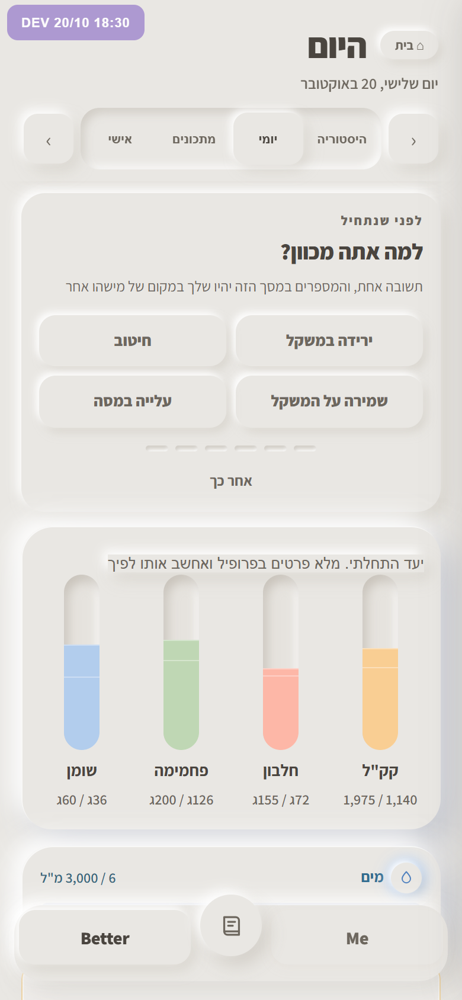
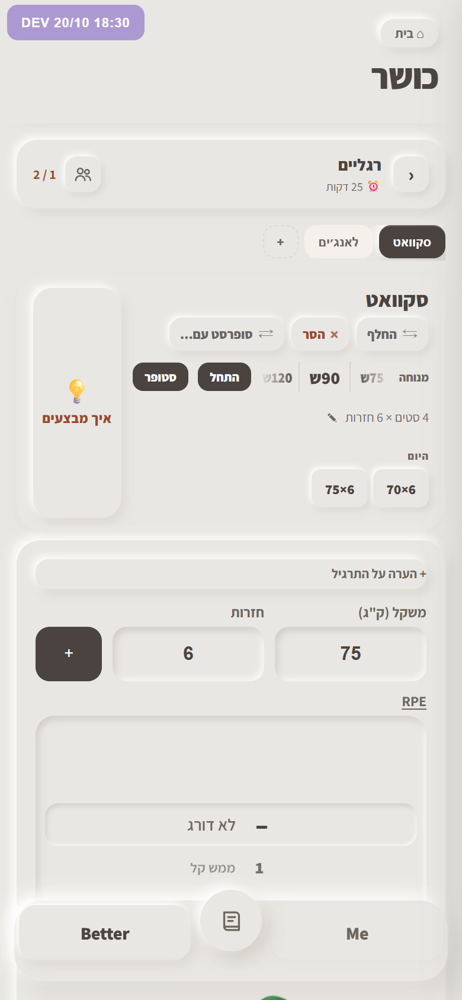

כשהחלבון או המים של היום מגיעים ליעד. האפליקציה כבר אומרת את זה פעם אחת ביום לכל יעד, היום בשורה אפורה. עכשיו Beem קופץ גבוה יותר מאחרי ארוחה, עם ביצה לחלבון וטיפה למים. רק חלבון ומים: הם רצפות, וכדאי להגיע אליהן. קלוריות לא, כי למי שבגירעון זה הדבר שהיא מנסה לא לעשות.

כשמרימים יותר מאי פעם בתרגיל. זה הרגע הכי גדול באימון, והיום הוא עובר כשורה עם כוכב. עכשיו Beem הופך לזהב ומסתובב, הרגע המיוחד מהגיליון, עם גביע. אחרי כמה שניות הוא חוזר להיות הוא.

כששני טלפונים מתחברים לאימון אחד בקוד QR. זה ההבזק שבחרת ב־19.10, במקום שבו הוא קורה באפליקציה: הגיליון שמראה את הקוד. כשהחבר נכנס, הקוד נעלם וה־Beem שלך עובר אליו, ושלו אלייך.